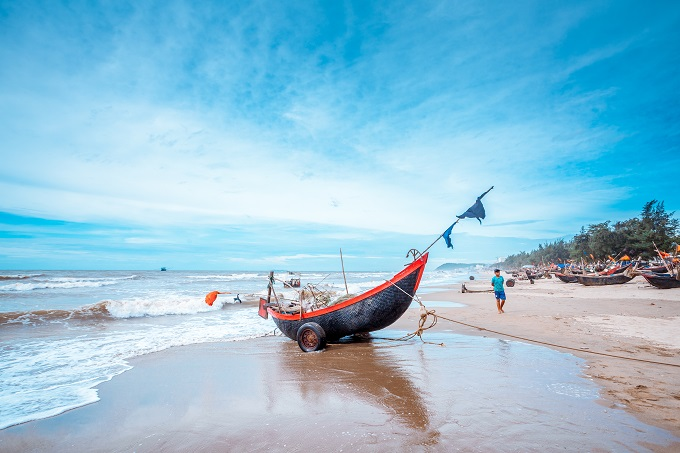
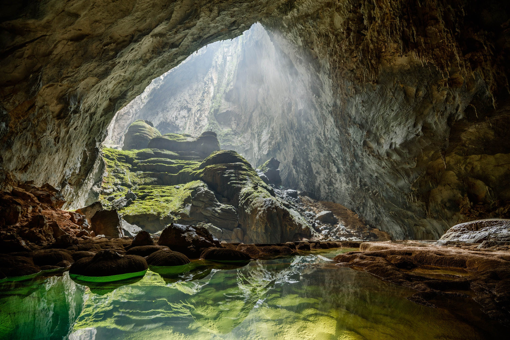

know about some places before your travel
featured places

Ha Long Bay, Quang Ninh
Ha Long Bay in Quang Ninh province - Vietnam includes the waters of Ha Long city, Cam Pha town, and part of Van Don island district

Ba Na Hills, Da Nang
So many interesting places such as Asia entertainment park, Ba Na hill, Hoi An ancient town...
Ong Lang Beach, Kien Giang
Ong Lang Beach Phu Quoc is located on the west coast of the pearl island, about 7km from Duong Dong town.

Sam Son Beach, Thanh Hoa
Sam Son Beach is one of the most beautiful beaches in Vietnam and is always the most crowded beach in the North, Vietnam.
Hue Imperial Palace, Hue
Hue Citadel which was recognized as a World Cultural Heritage by UNESCO.

Son Doong Caves, Quang Binh
Son Doong cave in Vietnam is one of the most beautiful natural caves and the largest ever found in the world.